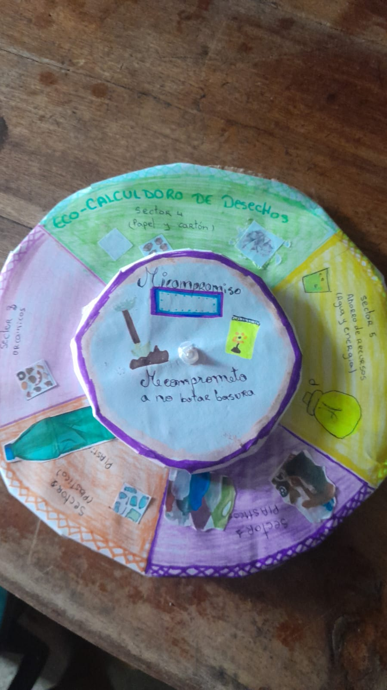
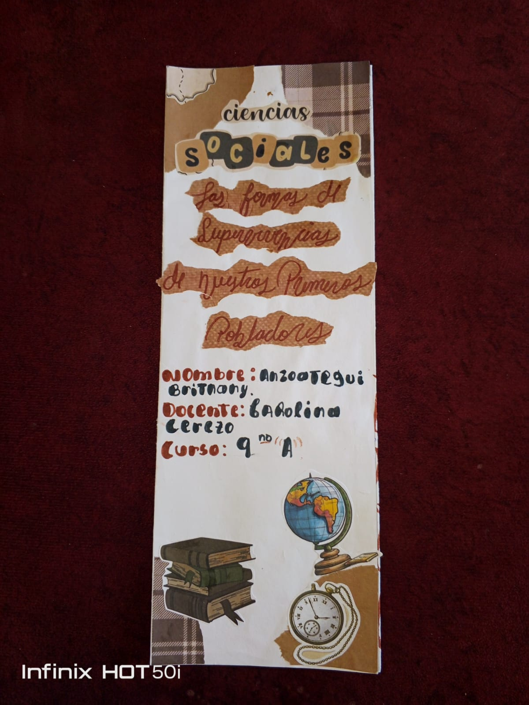
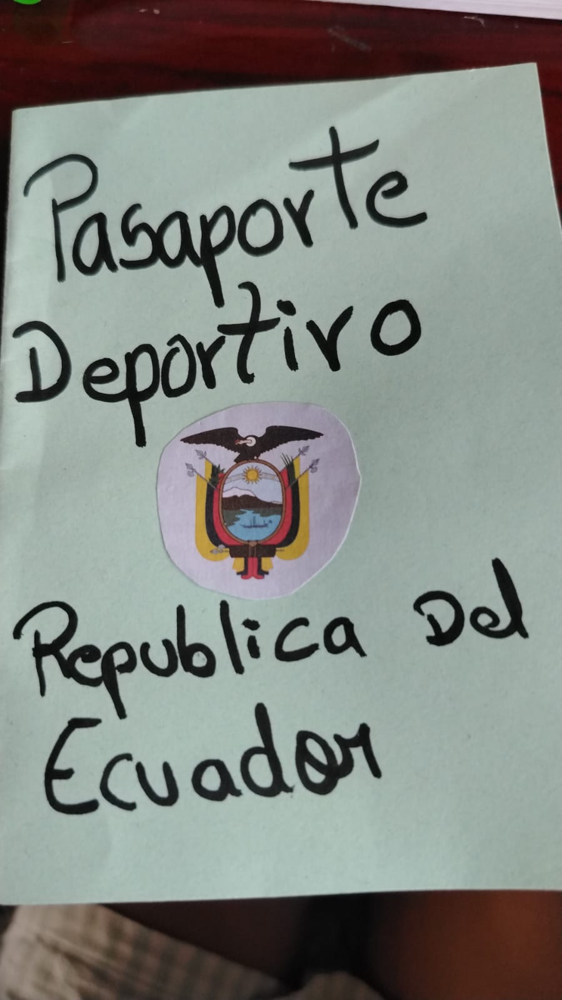
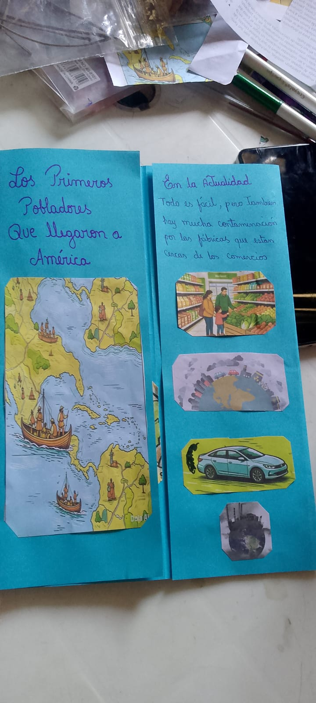

Proceso de Elaboración de la Web
1. Planificación y Estructura
Se definieron los objetivos del sitio web para que funcionara como una vitrina digital de todos los proyectos realizados en las distintas asignaturas[cite: 1].
2. Recolección de Evidencias
Se organizaron sesiones para fotografiar los trabajos físicos y los proyectos de los estudiantes, garantizando que cada material representara fielmente el aprendizaje[cite: 1].
3. Desarrollo Técnico
Se integraron las secciones de cada materia utilizando un diseño web coherente, permitiendo que el usuario pueda navegar entre las diferentes áreas del conocimiento[cite: 1].
4. Publicación y Difusión
Finalmente, se estructuró el sitio para su acceso público, facilitando que la comunidad educativa conozca los resultados del Proyecto Interdisciplinario[cite: 1].
Evidencias del Proyecto Interdisciplinario



